چند وقت پیش توی توییتر مرض گذاشتن هیتمپ از اسنپ، اسنپفود، تپسی و … گرفته بودم. همون موقع علاقهمند شدم که یه هیتمپ از قیمت خونه ها در تهران هم بذارم. الان یه فرصتی پیش اومد که این تپه رو هم فتح کنم. قیمت ها رو از سایت دیوار استخراج کردم. حالا با این موضوع کاری ندارم که ممکنه قیمت ها توی دیوار کمی پایین تر یا بالاتر از قیمت واقعی باشه. همین که یه حدودی دستمون بیاد میتونه جالب باشه!
با توجه به اینکه من میخوام یه هیتمپ روی نقشه ترسیم کنم پس باید یه جوری مختصات خونهای که توی دیوار آگهی شده رو پیدا کنم. عموما آدرس کاملا به صورت کلی گفته شده. مثلا نوشته خونه ۸۰ متری در مرزداران. اما همین هم برای من کافیه. من فقط میخوام بدونم مثلا تو مرزداران، تجریش، یافت آباد و … چند تا خونه آگهی شده و میانگین قیمت چقدره. برای تبدیل آدرس به مختصات از Search API نشان استفاده کردم :
این API یه اسم از من میگیره و در خروجی مختصات جغرافیایی برمیگردونه. من اطلاعات آگهی ۲۳۱۰۸۲ تا خونه رو که در سه هفته اخیر منتشر شده بودند از دیوار جمعآوری کردم. همونطور که در نمودار زیر هم مشاهده میکنید، تعداد ۱۵۳۳۰۹ خونه فقط برای فروش، ۴۸۸۰۰ خونه رهن و اجاره، ۲۸۶۹۸ خونه رهن کامل و ۲۷۶ خونه هم فقط اجاره خواستند.
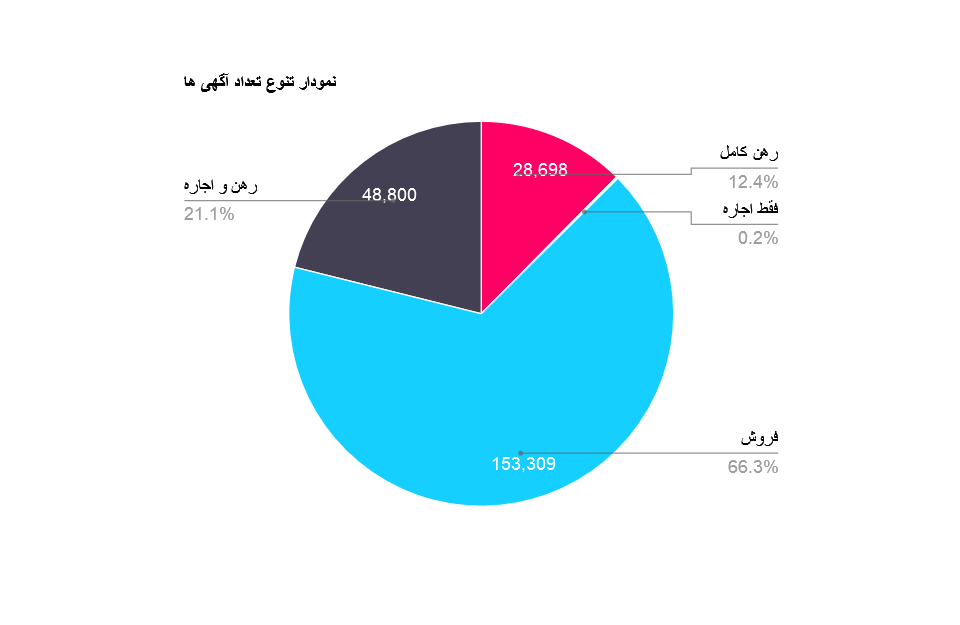
حالا میخوام هیتمپ های مختلف از این دیتاست رو بررسی کنم. برای رسم هیتمپ روی نقشه روش های مختلفی وجود داره. من از 3D Maps اکسل استفاده میکنم. مثلا فرض کنید آدرس ۱۰۰ تا خونه تو خیابون کریمخان زنده. خب هیتمپ رو چه جوری برای این نقشه رسم کنیم؟ من سه حالت زیر رو در نظر میگیرم.
روش Maximum : تو این روش اگر چند تا نقطه روی هم داشته باشیم، اونی که بیشترین مقدار رو داره به عنوان نماینده اون نقطه در نظر میگیره.
روش Average : تو این روش اگر چند تا نقطه روی هم داشته باشیم، میانگین مقادیر رو به عنوان نماینده اون نقطه در نظر میگیره.
روش Sum : تو این روش اگر چند تا نقطه روی هم داشته باشیم، جمع مقادیر رو به عنوان نماینده اون نقطه در نظر میگیره.
توزیع تعداد آگهی ها
هیتمپ زیر نشون میده به صورت کلی توزیع تعداد آگهی املاک در تهران به چه صورتی است :
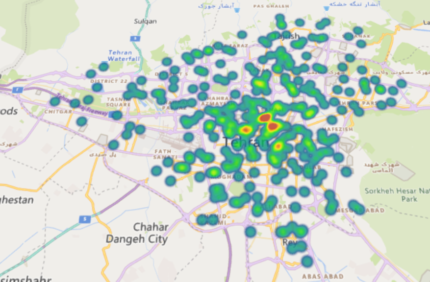
همونطور که در نقشه بالا مشاهده میکنید وسط نقشه تعداد آگهی های بیشتری وجود داره. روی اون قسمت قرمز زوم کنیم تا ببینیم دقیقا کجاست؟!
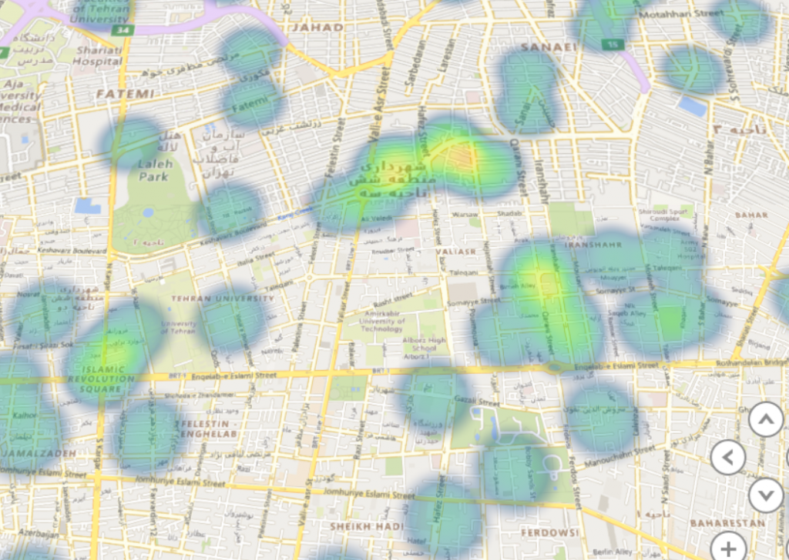
محدوده خیابان کریمخان زند، میدان انقلاب و خیابان سپهبد قرنی/ایرانشهر بیشترین آگهی ها رو به خودشون اختصاص دادند. خیابان کریمخان و ایرانشهر به دلیل بافت اداری/تجاری که داره کاملا منطقیه که آگهی های زیادی داشته باشه.
توزیع قیمت خانه ها (فروش)
نمودار زیر نشون میده توزیع قیمت خونه ها (اونایی که برای فروش گذاشتند) در تهران به چه صورتی است. بیاید از زاویه های مختلف به نمودار نگاه کنیم :
شرق به غرب :
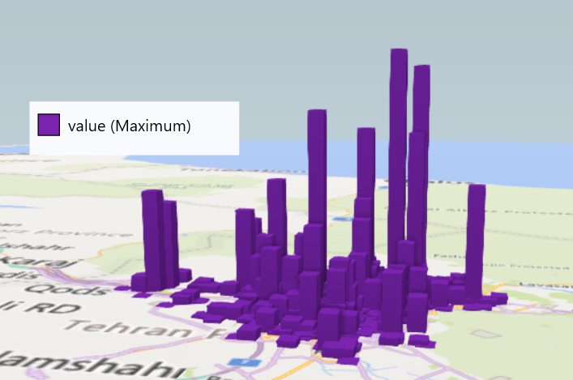
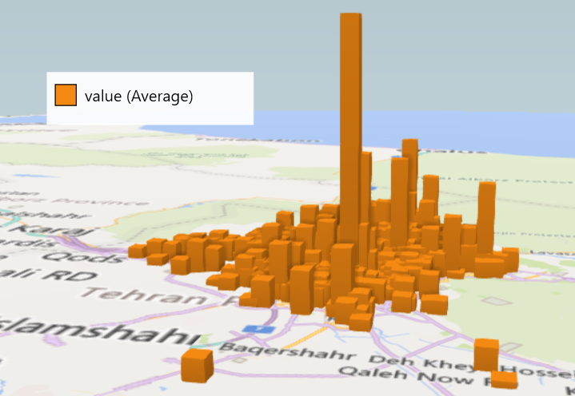
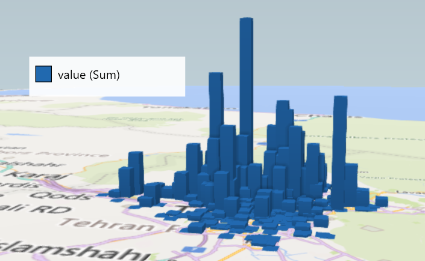
همونطور که میبینید قیمت خونه ها در شرق بیشتره (به خصوص شمال شرق) که میشه به محله های کاشانک، نیاوران، اقدسیه، قیطریه، تجریش، قلهک و … اشاره کرد.
جنوب به شمال :
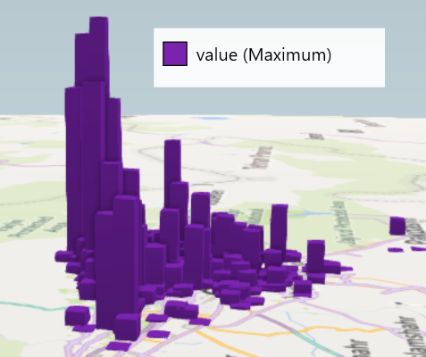
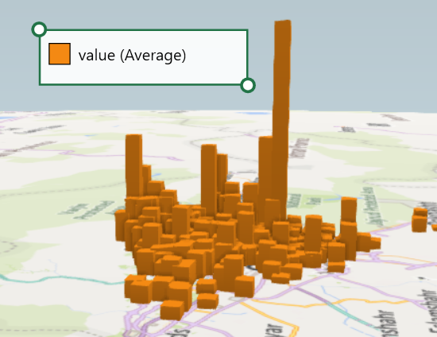
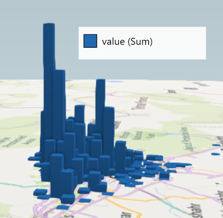
همونطور که در نمودار بالا مشاهده میکنید قیمت خونه ها از جنوب به شمال شیب صعودی داره.
تصاویر زیر هم هیتمپ همین نمودار ها رو نشون میدن. اعدادی که در هیتمپ ها مشاهده میکنید قیمت یک متر از اون خونه هاست. یعنی مثلا توی نمودار زیر که هیتمپ قیمت فروش خونه با روش Maximum رو نشون میده، گرون ترین خونه متری ۲۸ میلیارد تومن بوده و ارزون ترین خونه متری ۱۹ میلیون تومن بوده!
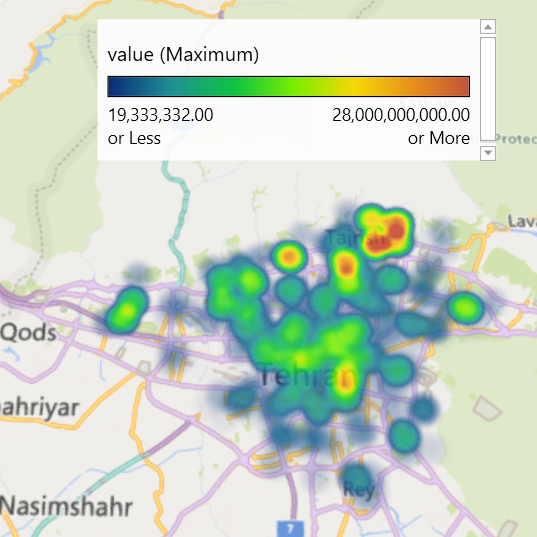
اون ناحیه قرمز رنگ شمال شرق نقشه میشه کاشانک، اقدسیه، فرمانیه و چیذر که بیشترین قیمت خونه ها رو دارند. ناحیه قرمز رنگ شمال مرکز میشه سعادت آباد و اون ناحیه قرمز رنگ جنوب شرقی اطراف خیابون پامنار و امیرکبیر
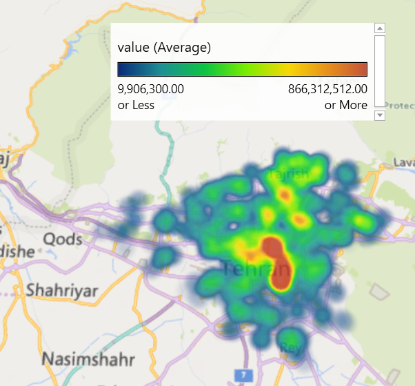
اون ناحیه قرمز رنگ وسط نقشه میشه بازار بزرگ تهران، پامنار و خیابان کریمخان زند (اطراف میون ولیعصر)
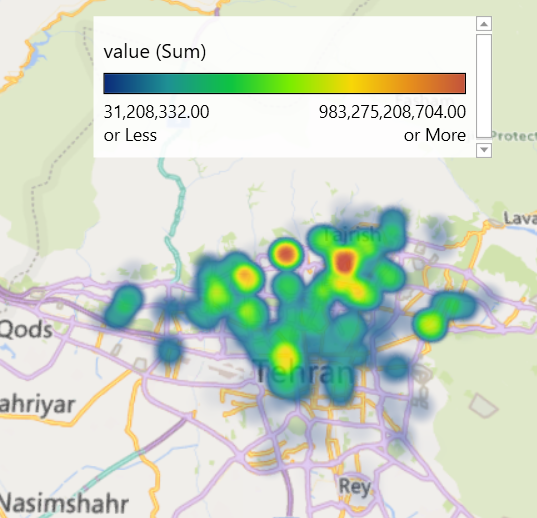
اون قسمت قرمز رنگ شمال شرق و مرکز هم میشه محله های کاوه، الهیه و سعادت آباد
توزیع قیمت خانه ها (رهن کامل)
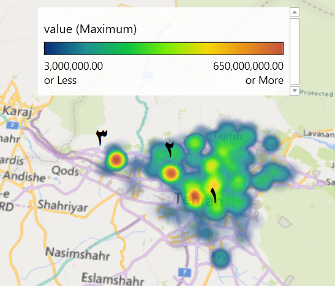
محله ۱ : تقاطع امام خمینی – نواب
محله ۲ : اباذر – کاشانی
محله ۳ : دریاچه چیتگر
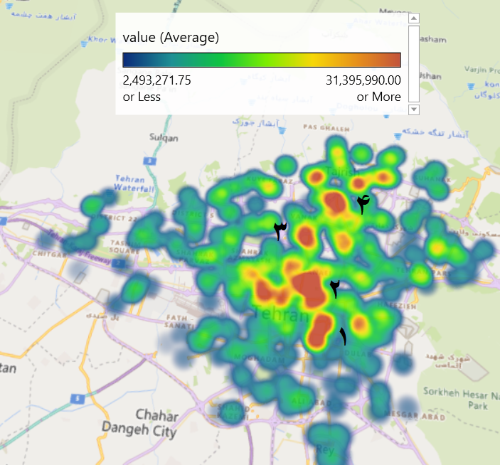
محله ۱ : بازار بزرگ تهران و پامنار
محله ۲ : خیابان قرنی، کریمخان زند، نجات اللهی و میدان ولیعصر
محله ۳ : محله نظامی گنجوی (توانیر)
محله ۴ : کاوه، الهیه
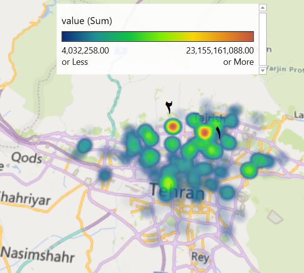
محله ۱ : کاوه، الهیه
محله ۲ : سعادت آباد
توزیع قیمت خانه ها (فقط اجاره)
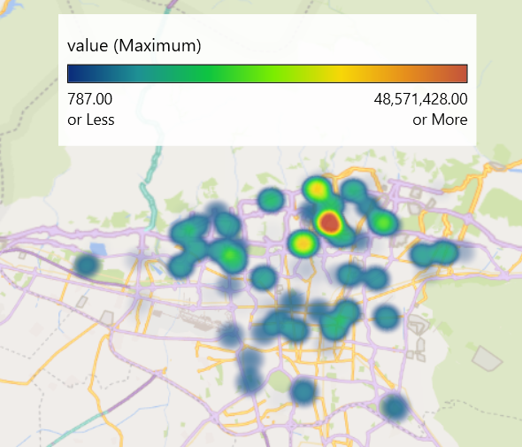
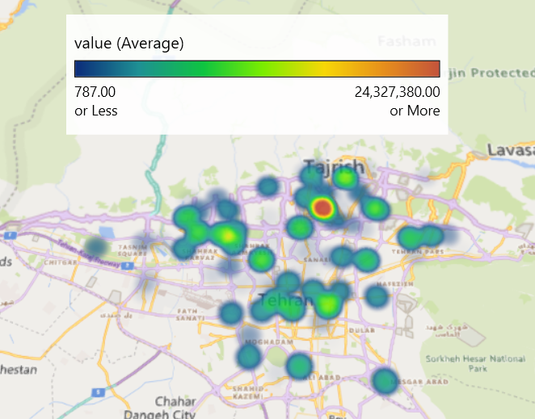
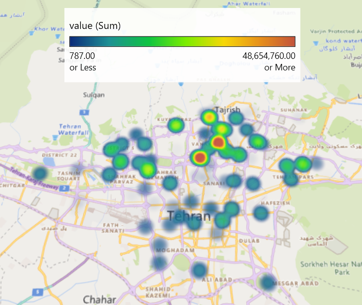
ناحیه قرمز رنگ برای هر سه تا نقشه میشه خیابان وحید دستجردی – شاهسون و بزرگراه کردستان – همت
توزیع قیمت خانه ها (رهن و اجاره)
نمودار های قبلی ما فقط یه قیمت داشتیم. یعنی یا فروش بوده، یا رهن کامل بوده (بدون اجاره) یا فقط اجاره بوده. اما اینجا ما رهن و اجاره رو داریم. یعنی دو تا عدد داریم. این دو تا رو چه جوری با هم ترکیب کنم؟ کاری که من میخوام انجام بدم اینه که اجاره رو هم به رهن تبدیل کنم. الان یه نفر که پول رهن رو میگیره چیکار میکنه؟ عموما میذارن توی بانک و سودش رو میگیرن. من فرض میکنم سود روز شمار ۱۰ درصد باشه. فرض کنید یه نفر ۵۰۰ میلیون ودیعه بگیره و ۱ میلیون اجاره. ما چقدر باید توی بانک بذاریم که ماهی ۱ میلیون تومن سود بده؟ اگر ۱۲۰ میلیون توی بانک بذاره میشه ماهی ۱ میلیون تومن سود. خب من این ۱۲۰ میلیون رو با ۵۰۰ جمع میکنم که میشه ۶۲۰ میلیون رهن کامل!
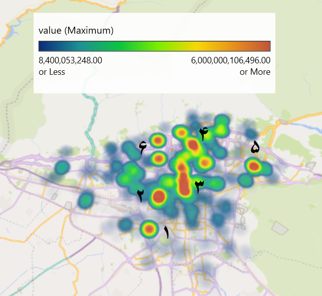
محله ۱ : ابوذر غربی – یافت آباد
محله ۲ : توحید – نصرت
محله ۳ : نجات اللهی – ولیعصر/بهشتی – رسالت/الوند
محله ۴ : الهیه – کاوه
محله ۵ : تهران پارس
محله ۶ : سعادت آباد – شهرک غرب
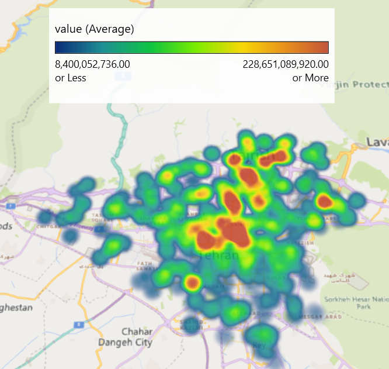
محله های این نقشه هم مثل ۶ تا محله نقشه قبلیه.
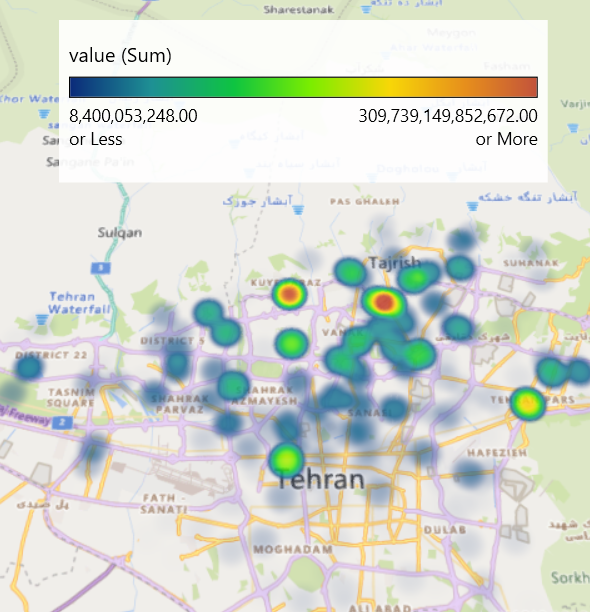
تو نقشه بالا هم نقاط قرمز رنگ کاوه – الهیه و سعادت آباد هستند.
nb.neighbours()
| title | date | |
|---|---|---|
| prev | دادهکاوی کلوچهمحور! | ۱۴۰۱/۱۱ |
| next | هیتمپ سوپرمارکتهایی که گلمحمدی معینیپور دارند! | ۱۴۰۱/۱۲ |